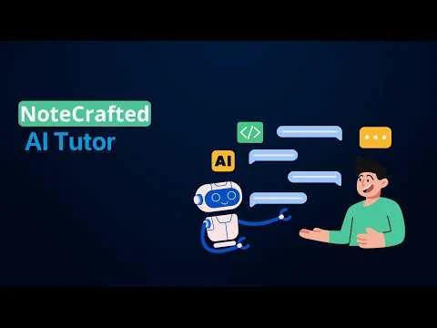

AI & ML2025
NoteCrafted
From study notes to questions you can practise with.
See it in action
Recorded demo
A recorded look at the concept. Open on YouTube for playback options.
The challenge
Turn study notes into material that students can actively practise with.
The idea
An AI tutor that generates practice questions and explanations from notes.
What came out of it
A recorded demonstration of the AI-tutor concept.